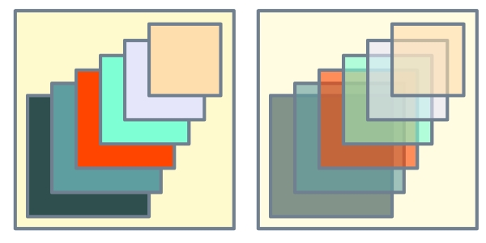

class Tioga::Transparency
These are the attributes for using transparency in PDF graphics. The transparency is speficied by a fraction, with 1.0 for fully transparent and 0.0 for fully opaque. Since transparency can also be thought of in terms of opacity, there are accessors defined in those terms also. Thus, for example, setting #fill_opacity to 0.2 is equivalent to setting #fill_transparency to 0.8.
Public Instance Methods
Defines the opacity to use for fill and other non-stroke graphics operations including images. Valid values are between 1.0 (fully opaque) to 0.0 (fully transparent). Default is 1.0 (opaque).
Example: on left, #fill_opacity = 1.0; on right #fill_opacity = 0.6

# File lib/Tioga/Transparency.rb, line 36 def fill_opacity end
Defines the transparency to use for fill and other non-stroke graphics operations including images. Valid values are between 0.0 (fully opaque) to 1.0 (fully transparent). Default is 0.0 (opaque).
Example: on left, #fill_transparency = 0.0; on right #fill_transparency = 0.4
# File lib/Tioga/Transparency.rb, line 76 def fill_transparency end
Alias for fill_opacity.
# File lib/Tioga/Transparency.rb, line 44 def opacity_for_fill end
Alias for stroke_opacity.
# File lib/Tioga/Transparency.rb, line 23 def opacity_for_stroke end
Defines the opacity to use for stroke operations. Valid values are between 1.0 (fully opaque) to 0.0 (fully transparent). Default is 1.0 (opaque).
# File lib/Tioga/Transparency.rb, line 15 def stroke_opacity end
Defines the transparency to use for stroke operations. Valid values are between 0.0 (fully opaque) to 1.0 (fully transparent). Default is 0.0 (opaque).
# File lib/Tioga/Transparency.rb, line 55 def stroke_transparency end
Alias for fill_transparency.
# File lib/Tioga/Transparency.rb, line 84 def transparency_for_fill end
Alias for stroke_transparency.
# File lib/Tioga/Transparency.rb, line 63 def transparency_for_stroke end